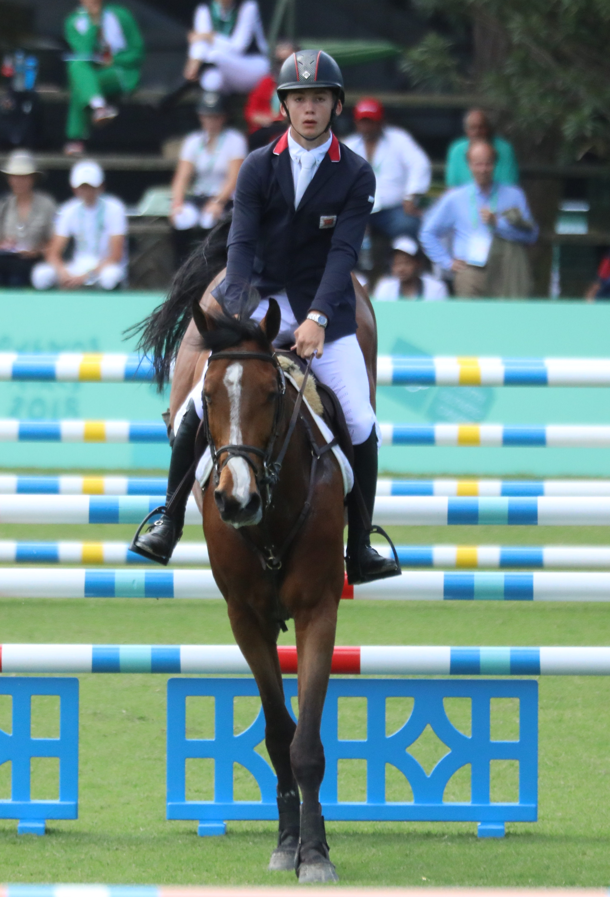

Jack Whitaker gana la prueba Ranking del CSIO5* Roma Piazza di Siena
El jinete británico Jack Whitaker se adjudicó este viernes la cuarta prueba Ranking del CSIO5* de Roma Piazza di Siena con Izara des Dames, deteniendo el crono en 70,63 segundos en una clase puntuable para el Longines Ranking Group disputada en la pista histórica de Villa Borghese.

CC BY-SA
El jinete británico Jack Whitaker se adjudicó este viernes la cuarta prueba Ranking del CSIO5* de Roma Piazza di Siena con Izara des Dames, deteniendo el crono en 70,63 segundos en una clase puntuable para el Longines Ranking Group disputada en la pista histórica de Villa Borghese.
La segunda plaza fue para el irlandés Tom Wachman con Kilkenny, mientras que la francesa Megane Moissonnier completó el podio a lomos de Kandoo Z. Los tres binomios firmaron el recorrido sin penalización, en una manga decidida al cronómetro que reunió a la élite del salto internacional en una de las pistas más simbólicas del calendario FEI.
La prueba, patrocinada por ENI, forma parte del Longines Ranking Group y reparte puntos válidos para la clasificación mundial individual, una herramienta clave para acceder a las grandes citas del circuito CSI5* y a los próximos campeonatos internacionales. La jornada del viernes en Piazza di Siena ha estado marcada también por la disputa de la Copa de Naciones INTESA SANPAOLO, en la que el equipo de México se proclamó vencedor por delante de Alemania y Reino Unido.
Mejor español: 6º Armando Trapote con Tornado VS, parando el reloj en 70,63 segundos con cero faltas. El jinete extremeño firmó uno de los mejores resultados hispanos en lo que llevamos de semana en Roma, en un concurso en el que España compite con varios binomios bajo la dirección técnica de la Real Federación Hípica Española.
— Redacción de Hípica al Día